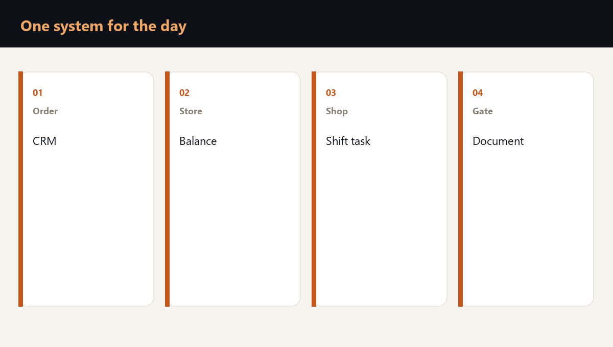

ERP and CRM become a single point of failure on the day when the order, the warehouse, production and shipping live in one database. Ransomware that closes that database stops output, even if the machines are intact.

Where the system holds the whole day
The order lives in CRM. The promised date, the balance and the purchase of raw material live in ERP. The shift task and the packaging look at the same database. The vehicle at the gate waits for a document from it as well.
| Step of the day | What sits in the system | What is unique |
|---|---|---|
| The order | Customer, price, date | The terms of this contract |
| The warehouse | The balance and the bin | The batch for a named customer |
| Production | The specification and the shift task | The recipe and the tooling |
| Shipping | The document and the route | The customer receiving window |
- A commodity balance can be recounted on paper within hours.
- A contract term and a recipe cannot be rebuilt from memory.
- If the exit document exists only in the database, the gate stops with it.
- CRM without ERP leaves the seller with a promise the warehouse cannot see.
What cannot be bought and what can be run by hand
The market the next day has commodity items, standard packaging and transport. The market does not have your order history, your specification or the right to ship this batch to this customer.
A manual path makes sense for a short list: take an order on a form, ship against a balance exported in advance, warn the customer of a new date. A path that was never rehearsed does not appear on the day of the attack.
A second way to take an order and ship commodity goods costs less than a day of full stoppage. Its limit is honest: a unique specification will not travel that way.
What the check does
The ransomware readiness check walks the chain of order, warehouse, production and shipping, and shows which step lives only in one database, what a day of that step costs, and which manual path the company can actually hold.
Frequently asked questions
A copy returns the data once it is restored. Until that hour the order, the warehouse and the gate need a second way to work. The copy and the manual path solve different hours.
The one that feeds shipping today: taking the order and issuing a commodity balance. The recipe and special contract terms do not go onto a form; they are kept apart from the working database.
Two systems and one point for the business, if a day of shipping cannot be lived without each of them. The fall of either one stops the promise to the customer.
Is your team ready for the first hour of a crisis?
You test a plan by running a scenario. Reading it is not enough. The assessment shows the gaps, and the corporate format works through them with your team on your own processes.